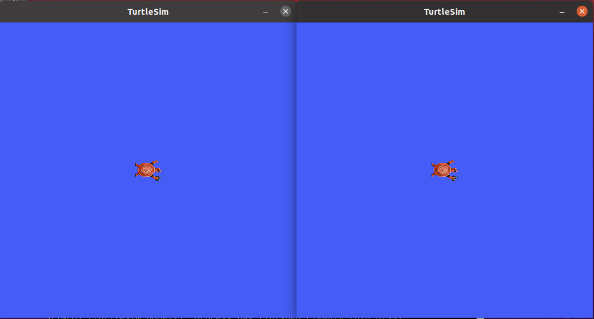
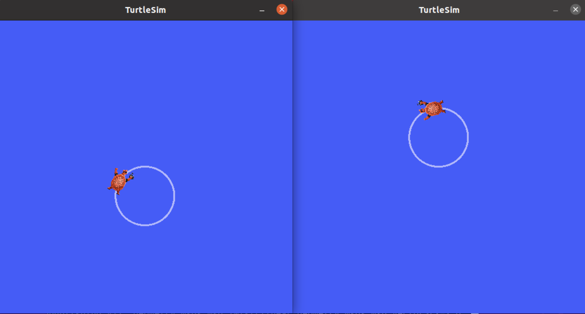

介绍 ROS2 launch
目录
背景
在大多数介绍性教程中，您已经为运行的每个新 node 打开了新的终端。当您创建越来越复杂的系统，并且有越来越多的 nodes 同时运行时，打开终端和重新输入配置细节将变得非常繁琐。
启动文件（launch file）允许您同时启动和配置许多包含 ROS2 nodes 的可执行文件。
使用 ros2 launch 命令运行一个启动文件将立即启动您的整个系统 —— 所有 nodes 及其配置。
前提条件
在开始这些教程之前，请按照 ROS2 安装页面上的说明安装 ROS2。
运行启动文件
打开终端并运行：
ros2 launch turtlesim multisim.launch.py
这个命令将运行以下启动文件:
# turtlesim/launch/multisim.launch.py
from launch import LaunchDescription
import launch_ros.actions
def generate_launch_description():
return LaunchDescription([
launch_ros.actions.Node(
namespace= "turtlesim1", package='turtlesim', executable='turtlesim_node', output='screen'),
launch_ros.actions.Node(
namespace= "turtlesim2", package='turtlesim', executable='turtlesim_node', output='screen'),
])
注意
上面的启动文件是用 Python 编写的，但是您也可以使用 XML 和 YAML 来创建启动文件。您可以在 Using Python、 XML and YAML for ROS2 Launch Files 中看到这些不同的 ROS2 启动格式的比较。
这将运行两个 turtlesim nodes:

现在，不要担心这个启动文件的内容。你可以在 ROS2 启动教程 中找到更多关于 ROS2 启动的信息。
（可选）控制 turtlesim nodes
现在这些 turtlesim nodes 正在运行，您可以像控制其他 ROS2 nodes 一样控制它们。例如，你可以通过打开另外两个终端并运行以下命令，让海龟朝相反的方向行驶:
在第二个终端输入：
ros2 topic pub /turtlesim1/turtle1/cmd_vel geometry_msgs/msg/Twist "{linear: {x: 2.0, y: 0.0, z: 0.0}, angular: {x: 0.0, y: 0.0, z: 1.8}}"
在第三个终端输入：
ros2 topic pub /turtlesim2/turtle1/cmd_vel geometry_msgs/msg/Twist "{linear: {x: 2.0, y: 0.0, z: 0.0}, angular: {x: 0.0, y: 0.0, z: -1.8}}"
在运行这些命令之后，您应该会看到如下内容（一个顺时针转，一个逆时针转）:

小结
到目前为止，您所做的工作的重要意义在于，您已经使用一个命令运行了两个 turtlesim nodes。一旦您学会了编写自己的启动文件，您将能够以类似的方式运行多个节点——并设置它们的配置 —— 使用 ros2 launch 命令。